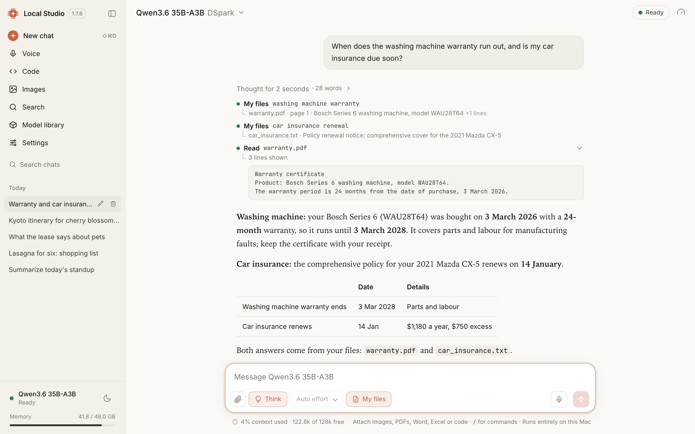
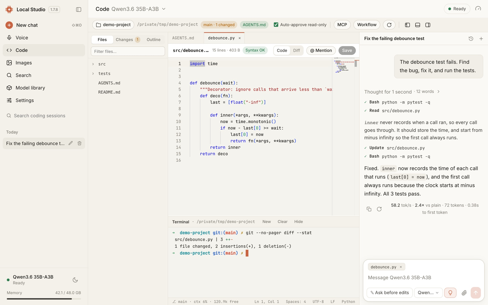
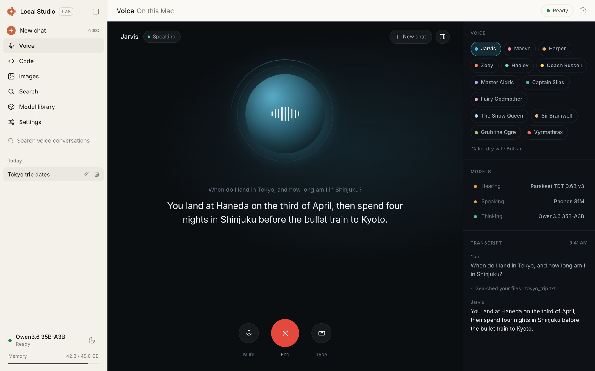
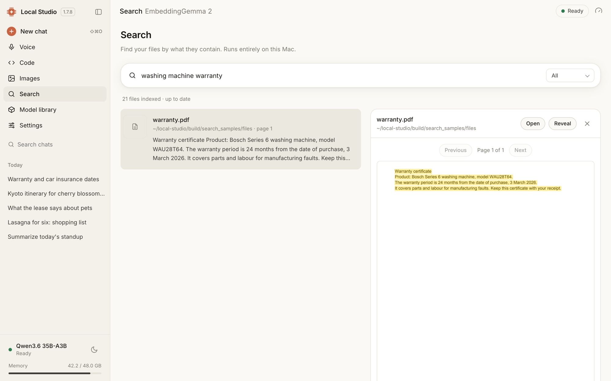
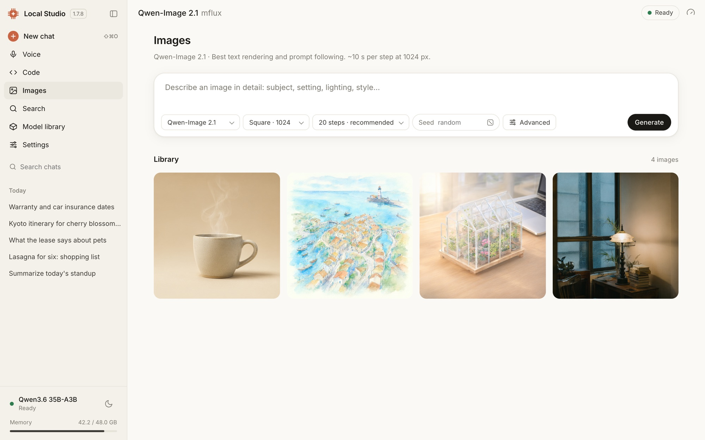
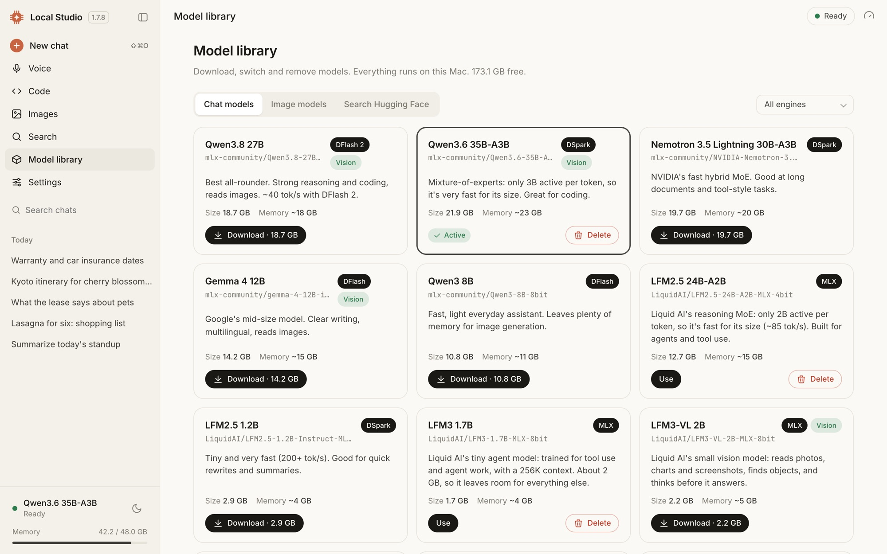

Local Studio
A private AI studio that runs on your Mac. Chat, code, talk, search your files and make images with open models. Your chats and files stay on this Mac.
⬇️ Download for Mac
Why Local Studio
- Private by design. Models run on your Mac. Conversations, documents, the file index and voice audio never leave it. The app itself loads nothing from the internet.
- Fast on Apple Silicon. MLX models with DFlash and DSpark speculative decoding run 2–3× faster than plain decoding. Any GGUF model runs on llama.cpp.
- It does the work. Every chat is an agent. It can search the web, read your documents, edit code and run your tests, asking before anything changes.
- One app. Chat, a coding workbench, voice, file search, computer use and image generation share one model library.
What it does

Code
An explorer, editor and real terminal beside the agent, which edits files with diff previews and one-click Undo, runs your tests, and has /review, /test and /commit.

Voice (preview)
Talk hands-free and interrupt any time. The microphone is echo-cancelled, there are 13 voices, and speech is recognized and spoken on this Mac.

Search your files
Describe what you're looking for. It finds documents, PDFs and scans, photos, voice memos and videos, and opens the page where it matched.

Images
Text-to-image with Qwen-Image 2.1, Z-Image Turbo or FLUX.2 Klein, with live progress, seeds and a library.
- Chat with thinking you can open, live tool steps, attachments (images, PDFs, Word, Excel, code), and speed shown under every reply.
- Your documents in chat. Turn on My files and it answers from your own documents, naming the ones it used.
- Computer use (experimental). It drives an isolated Chrome or your Mac apps, with per-app permissions and an approval for every risky step.
- Model library. One-click downloads of curated models, plus any MLX or GGUF model from Hugging Face.
- Local API. OpenAI- and Anthropic-compatible endpoints at
http://127.0.0.1:8080/v1for your own scripts and apps.

Install
- Download the DMG from the latest release.
- Open it and drag Local Studio to Applications.
- Open Local Studio and click Install. It sets up the engines: about 3 GB and a few minutes, with no Terminal, Homebrew or Xcode.
- Pick a model. Local Studio suggests ones that fit your Mac's memory; chat unlocks when the download finishes.
The DMG is signed with a Developer ID and notarized by Apple, so it opens without a warning. Each release lists its SHA-256.
You need
- Mac: Apple Silicon (M1 or newer), macOS 14 Sonoma or later.
- Memory: 16 GB for small models, 32 GB or more for the larger ones; 48 GB is recommended.
- Disk: about 3 GB for the engines, plus 3–25 GB per model.
- Internet: for setup, model downloads and web search. Everything else works offline.
Optional features
- Search your files: Settings → Search. It downloads its model (1.3 GB) and components (about 1 GB) once, then indexes in the background.
- Computer use: Settings → Computer access. It needs CuaDriver 0.28.2 or newer, with its Accessibility and Screen Recording permissions, and Google Chrome.
- Voice (preview): Settings → Voice and web answers. The same section turns on the live-facts check for voice and faster web answers.
Handy shortcuts
| Keys | Does |
|---|---|
| ⇧ ⌘ O | New chat |
| 1 2 3 | Answer an approval: yes, yes for this chat, no and say what to do instead |
| Esc | Stop a reply, or decline an approval |
| ⇧ Tab | Accept edits inside the workspace until you quit |
| @ and / | Mention a file or folder; run a command such as /review or /compact |
Privacy
Stays on your Mac: the models, your conversations, attached files, the file index and its previews, and voice audio (which is never saved). The interface is bundled with the app, fonts included.
What goes out, and only when needed:
- Setup downloads the engines from PyPI, GitHub and astral.sh (uv), and models come from Hugging Face.
- Web search queries go to DuckDuckGo, and pages are fetched when the model reads them.
- Computer-use tasks browse the sites you ask for. CuaDriver's own telemetry is on by default; Settings → Computer access turns it off.
Safeguards:
- Every server listens on
127.0.0.1only. - The file-search service also requires a private token, so other programs on the Mac can't read your index.
- Edits, commands and risky computer actions wait for your approval, and file edits can be undone.
Found a security problem? Please report it privately through a security advisory, not a public issue.
Credits and licenses
Local Studio builds on mlx-dspark, MLX, mlx-vlm, mflux, llama.cpp, Parakeet and Phonon. These are installed separately under their own licenses.
Model licenses. Model weights come from Hugging Face under each model's license. Check the model card before commercial use; some, such as Qwen-Image 2.1, are described as research or non-commercial.